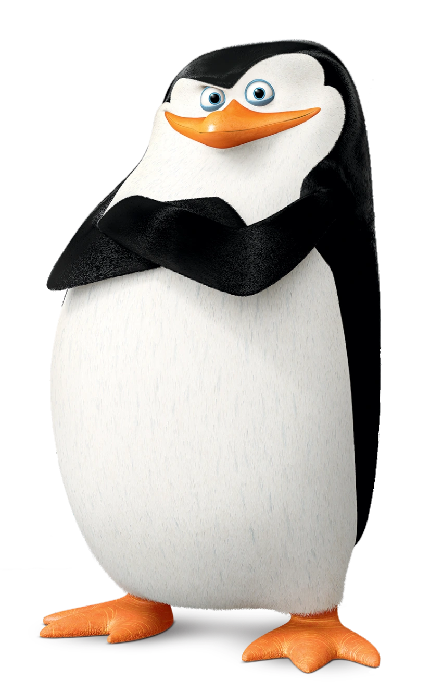

Skipper:

Opis postaci:
Jest odpowiedzialny za obmyślanie taktyki i wydawanie rozkazów pozostałym członkom swojego oddziału. Jest bardzo nieufny w stosunku do innych zwierząt, z wyjątkiem Marlenki i Maurice'a. Doskonale walczy. Kowalski, Szeregowy i Rico nie potrafią go pokonać ani zaskoczyć.Potrafi wyczuć strach. Kocha sushi. Boi się igieł. Kolekcjonuje łzy wrogów z pola walki i naparstki z obrazkami w tematyce parków narodowych. Jego najwięksi wrogowie to Doktor Bulgot – delfini geniusz zła, jak i również Hans – maskonur pochodzący z Danii, przez którego to, Skipper jest w tym kraju wrogiem publicznym numer jeden. Jego brzuch (tzw. bebech) podpowiada mu co dobre, co Kowalski nazywa jasnowidzącym jelitem, zazwyczaj jest z nim zgodny. Z jednej strony paranoiczny i ostrożny co do innych zwierząt, Skipper w stosunku do swojego oddziału i przyjaciółki – wydry, Marlenki – jest surowym, aczkolwiek opiekuńczym i troskliwym pingwinem. Myśli o nich jak o swojej rodzinie, a o młodego Szeregowego troszczy się jak o syna. Ma bezgraniczne zaufanie do swoich żołnierzy. Lubi robić sobie zdjęcia i wypoczywać na leżaku z okularami słonecznymi i lodami. Nie umie przyznawać się do błędów, zawsze próbuje udowodnić, że miał rację. Ma tiki nerwowe, czasem jego prawe oko drży. Nazywa Króla Juliana „ogoniastym”.Jest bardzo silny. Potrafi pokonać w walce prawie każdego. Jako jedyny umie dowodzić ekipą. Pingwiny bardzo go szanują gdyż jest on szefem.
Wygląd:
Skipper jest prawie najniższy z drużyny. Posiada lekką nadwagę, uważa jednak że to mięśnie. Ma niebieskie oczy. Jego czoło jest krótkie i niskie, Król Julian często się z niego naśmiewa. Mimo że jest prawie najmniejszy z oddziału, jest najsprawniejszy i najsilniejszy.
Ciekawostki:
1.Skipper ma chorobliwy lęk przed zastrzykami, co można zobaczyć w odcinku Operacja: Igła.
2.W oryginalnej wersji, pingwiny zwracają się do Skippera po imieniu, natomiast w polskiej wersji nazywają go "szefem".
3.W serialu pojawia się wzmianka, że jeden z wrogów Skippera, maskonur zwany Hans, podkochuje się w nim.
4.Chociaż Skipper nie szanuje ssaków, Marlenka jest jego bliską przyjaciółką.
5.Gdy w odcinku Pan Talon, Kowalski pokazywał zdjęcia Skippera z jego innymi alter ego, może być możliwe, że pingwin był utalentowanym aktorem/piosenkarzem, albo przebierał się incognito podczas misji.
6.Jeden z jego pseudonimów: Lincoln Douglas, jest nawiązaniem do dwóch polityków: Abrahama Lincolna oraz Stephena Douglasa.
7.Po walce z Hansem w Kopenhadze, Skipper został nazwany największym wrogiem numer jeden Danii.
8.Lubi twarde poduszki.
9.Jest jedynym pingwinem, który ma tego samego aktora podkładającego głos (Tom McGrath i Grzegorz Pawlak) przez całą trylogię Madagaskaru.
10.Gdy jeden z jego członków grupy umiera, albo zostaje zabrany, krzyczy jego imię bardzo głośno. Jest to jeden z jego gagów trwających.
11.Skipper zawsze pije o poranku kawę rybną.
12.Wierzy, że brytyjski akcent Szeregowego jest fałszywy.
13.Gdy jedna z kobiet w odcinku Drobnym drukiem nazwała go "puszystym", Skipper sam stwierdził, że jest muskularny.
14.Skipper niekiedy nazywa inne zwierzęta z serii przezwiskami. Najczęściej, nazywa Króla Juliana "Ogoniastym", Morta "Smutnookim", Burta "Trąbalskim" czy Masona i Edka "Człekokształtnymi".
15.Na plakacie promującym Madagaskar, Skipper został nazwany jako Joe Penguin.
16.Pomimo wielu kłótni i awantur pomiędzy nimi, Skippera przynajmniej podświadomie obchodzi dobrobyt Króla Juliana. Uważa on go za swojego przyjaciela.
17.Jest lewoskrzydłowy/leworęczny.